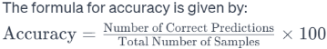
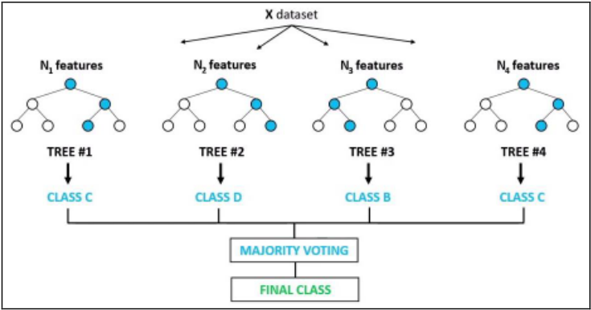
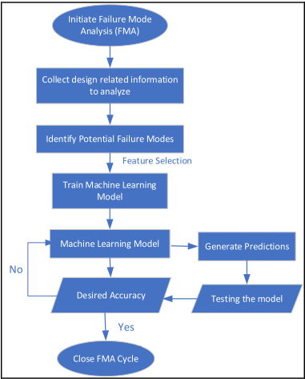
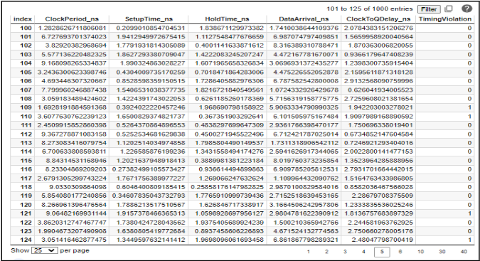
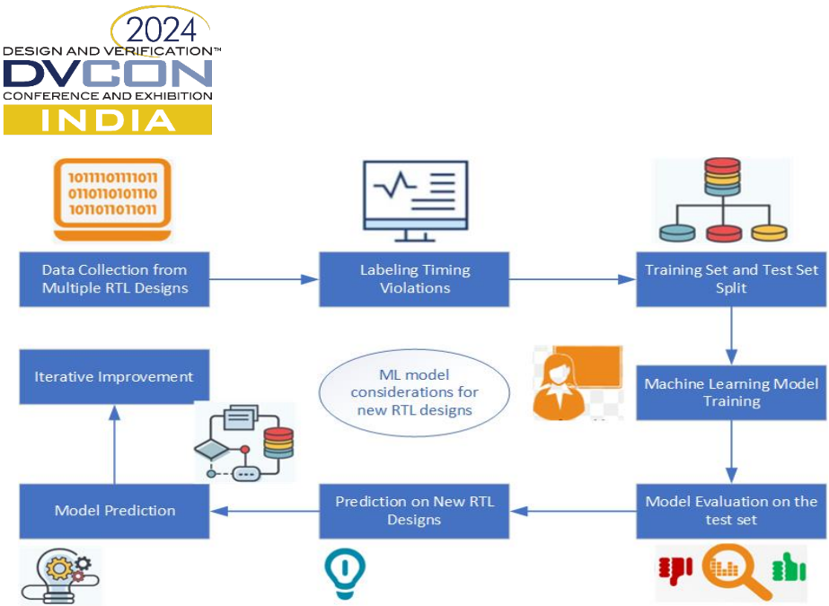
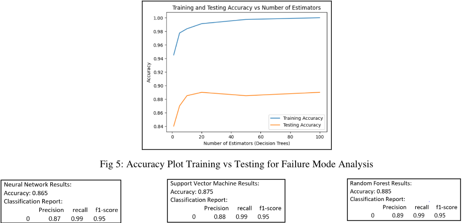
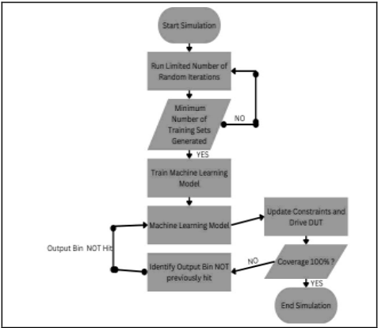
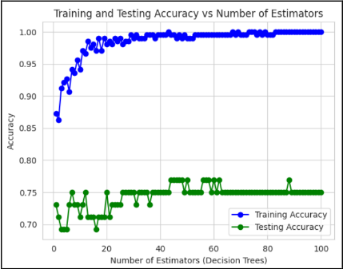
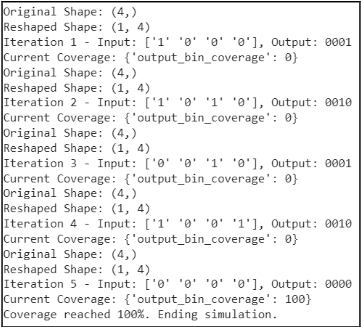

利用 AI/ML 模型增强 VLSI 设计与验证
该论文针对数字 VLSI 开发中的两个问题：failure mode 难以在设计早期识别、功能验证 coverage closure 仿真开销大，提出基于 ML 的双轨方法。第一条线以 Random Forest Classifier/Decision Tree 在带标签数据集上训练，在设计阶段预测 timing violations、power integrity、logic errors、memory access failures、temperature-related issues 等 failure mode，将 FMEA 原则与数据驱动建模结合，形成可迭代 refinement 的 FMA 流程。第二条线用 ML 模型（还探索了 ANN、DNN、SVR）预测 input stimuli 结果，指导 constrained random verification 系统性 randomize 输入以高效命中 planned coverage targets，并在 output bin 命中后迭代更新 coverage 值。结论显示相比现有方法，达到 full coverage closure 所需仿真周期数显著减少，FMA 与 coverage 预测均给出 accuracy 结果。作者指出未来需在更复杂 DUT 配置上验证 ML 模型可扩展性，并整合多模态数据源以提升可靠性与准确性。
论文解决两个问题：(1) 在设计阶段尽早识别潜在 failure mode（timing violations、power integrity issues、logic errors、memory access failures、temperature-related challenges 等），支撑及时 mitigation 与可靠的系统开发；(2) 在功能验证中降低达到 coverage closure 所需的仿真周期数，通过 ML 预测 input stimuli 来高效命中 coverage 目标、消除 coverage gaps。
双轨 ML 方法：(1) Failure Mode Analysis：以 Random Forest Classifier（基于 Decision Trees）在带标签数据集（论文给出 timing violations 样本数据集示例）上训练，学习与 failure 相关的 subtle patterns 和 features，对新设计预测潜在 failure，将 FMEA 原则贯穿产品/系统生命周期各阶段，形成数据驱动、可迭代 refinement 的 FMA；(2) Constrained Random Verification：用 ML 模型预测正确的 input stimuli，系统性 randomize 输入值以高效命中 planned coverage targets，论文还探索了 ANN、DNN、SVR 等技术，并通过迭代（output bin hit 后更新 coverage value）驱动 coverage 收敛。
定性结论：相比现有方法，达到 full coverage closure 所需仿真周期数显著减少（notable reduction in simulation cycles）
FMA 使用不同 ML 模型的 accuracy scores（Fig 6）、Constrained Random Verification 的 training vs testing accuracy（Fig 8）、不同 input width 下使用/不使用 Random Forest 命中 coverage 所需迭代次数对比（Fig 10 表格）均以图表形式呈现，具体数值未在论文正文中说明
将 FMEA 原则与 ML 预测模型结合，用于设计阶段 failure mode 的早期主动识别；同时用 ML 预测 input stimuli 以减少 constrained random verification 的仿真周期，区别于传统纯随机验证与人工 FMEA，强调数据驱动 insight、增强的预测能力与迭代 refinement。论文未与具体已有方法做详细的量化对比。
相关度级别：medium
命中能力域：2.6 Fault simulation/Z01X/TFMEA | 2.7 CyberSec/自动化
理由：论文不涉及 DFT/ATPG、BSCAN、OCC/LBIST、HBM4/UCie 测试等团队核心技术，但其两条主线与团队能力域存在方法层面关联：(1) ML-based FMEA 与 2.6 中 FuSa TFMEA/FMEDA 论证、failure mode 建模的思路相通，可借鉴其带标签 failure 数据训练与预测的做法；(2) ML 驱动的 coverage closure 与 2.7 中 AI 辅助流程/自动化方向一致，可参考用于验证环境提效。但论文既未做 fault injection/fault grading，也未涉及 diagnostic coverage、ASIL 等功能安全要素，且自动化对象是功能验证而非 DFT flow，因此判为 medium：方法有借鉴价值但不直接命中任一能力域的核心技术。
建议动作：作为方法参考存档
本文提出了一项双焦点分析，旨在强化数字电路的功能、性能与安全性，同时优化验证流程。首先，本研究利用机器学习算法，特别是决策树（Decision Trees），预测输入激励的结果，以有效解决覆盖率缺口问题。这种预测建模不仅增强了功能验证，还优化了仿真周期，从而营造出更高效的验证环境。其次，该研究涵盖了全面的故障模式范围，包括时序违例、电源完整性问题、逻辑错误、存储器访问故障以及与温度相关的挑战。结果表明，与现有方法相比，实现完全覆盖率收敛所需的仿真周期显著减少。主要结论强调了利用机器学习模型进行故障模式分析（Failure Mode Analysis）所带来的增强预测能力、数据驱动洞察以及迭代改进。未来方向包括利用更复杂的被测设计（Design Under Test, DUT）配置验证机器学习模型的可扩展性，并集成多模态数据源以提高设计过程中的可靠性与准确性。这种跨学科方法有望在各类行业和应用中提升数字电路设计的鲁棒性与效率。
硬件系统在我们高度互联的世界中发挥着举足轻重的作用，其应用涵盖从消费电子到关键基础设施的各个领域。然而，即使是设计最为周密的系统也可能遭遇意想不到的故障。挑战在于尽早识别这些故障模式，从而实现及时缓解并支持稳健的系统开发。我们的研究聚焦于两个关键目标：用于早期故障模式识别的预测模型：首要目标是构建能够在设计阶段识别潜在故障模式的预测模型。通过利用随机森林分类器（Random Forest Classifier）等机器学习算法，我们旨在检测与故障相关的细微模式和特征。这些模型从带标签的数据集中学习，从而能够主动预测故障场景。失效模式分析（FMEA）原理的应用增强了我们对产品或系统生命周期各阶段故障动态的理解。FMEA 作为一种多功能工具，能够提供可操作的洞察、早期问题检测以及持续改进的机会。其适应性使我们能够全面应对故障风险。[4] 减少仿真周期的功能覆盖率优化：在故障预测之外，我们提出了一种新颖的方法，可在最小化仿真周期的同时提高功能覆盖率。我们的机器学习模型专注于预测正确的输入激励。通过这种方式，我们优化了覆盖率指标，确保关键场景得到充分探索。我们探索了一系列机器学习技术，包括人工神经网络（ANN）、深度神经网络（DNN）和支持向量回归（SVR）。这些模型使我们能够系统地对输入值进行随机化，从而高效地达成计划的覆盖率目标。[3]
研究范围与未来方向：FMEA 领域十分广阔，我们的研究为更深入的探索打开了大门。随着我们不断改进模型并扩展其适用范围，我们期待在硬件可靠性方面取得突破。通过将预测建模与 FMEA 相结合，我们为构建能够经受住现实世界挑战的弹性系统铺平了道路。









| Width of Inputs No. of Iterations | Optimized No. of Iterations | |
|---|---|---|
| 1 | 3 | 3 |
| 2 | 33 | 16 |
| 3 | 140 | 23 |
| 4 | 800 | 26 |
| 5 | 3981 | 90 |
| | Width of Inputs No. of Iterations | Optimized No. of Iterations |
将失效模式分析（FMEA）应用于数字超大规模集成电路（VLSI）设计，能够主动识别潜在问题，从而提升芯片可靠性。FMA 作为一种必不可少的风险管理工具，可支持有针对性的优化。失效模式涵盖时序违例、电源完整性问题、逻辑错误、存储器访问故障、温度相关问题以及通信故障。利用包括 Random Forest 在内的机器学习（ML）模型，可对输入激励覆盖率进行预测。其优势包括更强的预测能力、数据驱动的洞察、更高的准确性以及迭代改进。未来的方向包括在复杂设计上测试 ML 模型，以及集成多模态数据源以提升可靠性与准确性。